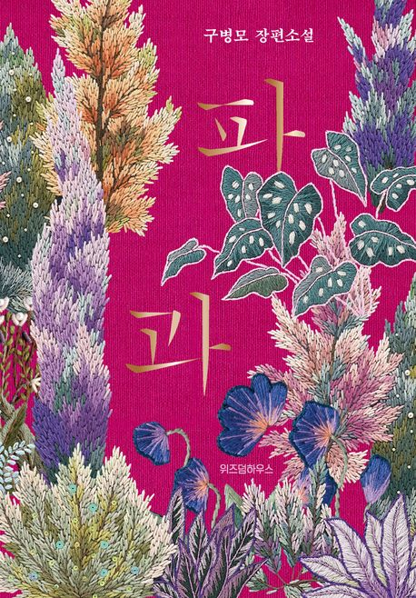
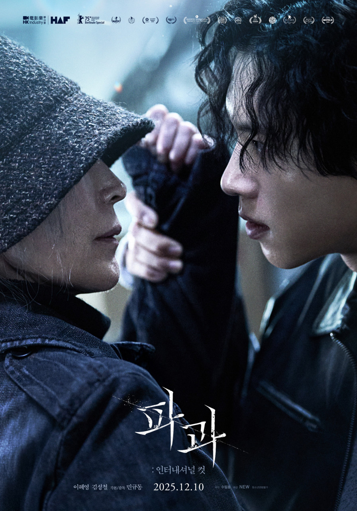

사이트 소개
파과는 냉철한 60대 킬러에게 피어나는 연민과 공감을 다루는 책이다. 이 책은 강자도 피할 수 없는 노화와 쇠퇴에 대한 문제의식에서 출발해, 노화는 단순한 쇠퇴가 아니라 인간을 변화시키고 타인과 연결시키는 과정임을 제시한다. 특히 노화, 쇠퇴, 인간성 회복을 중심으로 독자가 언젠가 모두가 마주하게 될 변화와 인간다움에 대해 생각하게 한다.
이 마이크로사이트는 책의 핵심 메시지인 냉철한 60대 킬러에게도 찾아오는 노화와 그 속에서 피어나는 연민과 공감을 사용자가 스크롤을 통해 경험하도록 설계한다. 이를 위해 세로 스크롤 중심의 화면 구조, 최소한의 정보 배치와 여백 중심 레이아웃, 검은 배경과 날카로운 세리프 서체, 스크롤에 따라 이미지와 텍스트가 흐려지고 사라지는 효과를 중심으로 디자인한다. 특히 점차 사라지는 이미지와 텍스트 효과는 주인공의 노화 과정을 표현하기 위한 선택이다. 사용자가 이 사이트를 통해 시간이 지나며 변화하는 몸과 감정을 경험하고, 주인공의 감정과 상황에 몰입하도록 하는 것이 목표다.
작가 소개
북트레일러
원작 도서 정보

소설 『파과』 (구병모 저)
2013년 출간 이후 독자들의 압도적인 찬사를 받은 구병모 작가의 대표작. 빛나는 서사와 강렬한 미문으로 65세 여성 킬러 '조각'의 무너져가는 몸과 그 안에서 새롭게 피어나는 연민의 감정을 섬세하게 그려냈습니다. 소멸의 눈부신 아름다움을 담아낸 한국 문학의 독보적인 서사시입니다.
영화 정보

영화 『파과』
구병모 작가의 동명 소설을 원작으로 하여 스크린으로 옮겨온 시네마틱 마스터피스. 원작 특유의 차갑고도 뜨거운 미학적 액션과 인물들의 깊이 있는 내면을 감각적인 영상미와 묵직한 연출로 담아내어 평단과 관객의 큰 호평을 받았습니다.